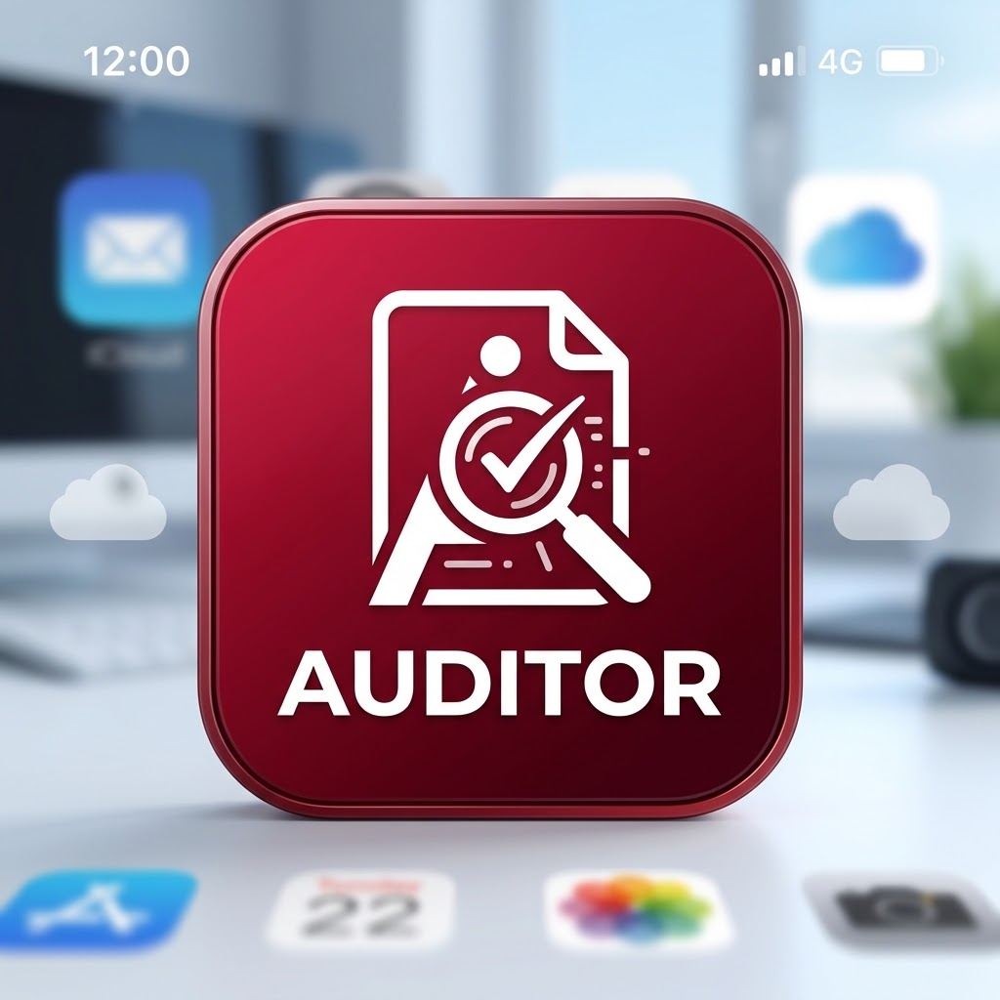
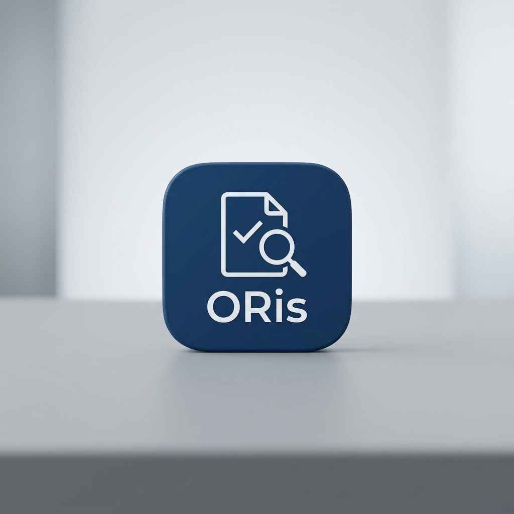

Administración funcional con permisos de administrador: incidencias de usuario, accesos y escalado a Sistemas. Seguimiento de tickets, pruebas funcionales, reporte en Mantis y retesting hasta el cierre.
Digitalización · QA funcional · Salesforce · análisis de datos
Entre negocio y Sistemas: pruebo, mido y propongo mejoras.
Técnico de digitalización en los sectores de energía y seguros. Recojo la necesidad, la traduzco a requisitos, valido el desarrollo con pruebas funcionales y mido el impacto antes y después del cambio. En mis proyectos propios construyo herramientas con desarrollo asistido por IA, revisando y validando siempre lo que produce.
Experiencia actual
Digitalización en una comercializadora de luz.
Desde julio de 2026 trabajo como técnico de digitalización en Randstad Project Services, en el área de Atención y Ventas de una comercializadora de luz. Antes pasé un año en operaciones de una mutualidad del sector seguros, donde ejecuté las pruebas UAT de la renovación de su área privada web.
Qué hago en el día a día
Administro Salesforce a nivel funcional, gestiono incidencias y evolutivos con Sistemas y proveedores externos, analizo los datos de los canales de contacto y preparo propuestas de mejora con su coste y sus dependencias.
Diseño y ejecución de pruebas en el rol de usuario y de gestor, documentación de bugs en Mantis y Azure DevOps y validación de cada corrección.
Análisis trimestral de siete canales de contacto con Excel y Python para encontrar causas raíz. Uso Power BI para sacar volúmenes de ficheros trimestrales; estoy empezando con él.
Uso Claude Code, Codex y otros asistentes. Defino el alcance, reviso la lógica, diseño las pruebas y valido los resultados antes de darlos por buenos.
Proyectos
Lo que pruebo y propongo en el trabajo, y lo que construyo por mi cuenta.
En cada proyecto indico mi papel real: cuándo lo audito o lo impulso y cuándo lo he construido yo. Los profesionales se describen sin datos internos.
En el trabajo
Análisis de canales de contacto
Análisis trimestral de siete canales de atención para encontrar las causas que generan llamadas evitables. Es la base de las propuestas de mejora.
Mi papel: análisis completo
Ver caso →Propuestas de autonomía del cliente
Tres propuestas para que los clientes resuelvan más gestiones por sí mismos, cada una con su estudio de costes y las dependencias entre departamentos.
Mi papel: elaboración y seguimiento
Ver caso →Asistente conversacional RAG
Asistente que responde con la documentación interna. Impulso su uso y lo audito: pruebas de respuesta, análisis de fallos y necesidades documentales.
Mi papel: auditoría funcional e impulso (no lo he construido)
Ver caso →AgenteMOD
Agente de IA capaz de ejecutar gestiones, no solo de responder. Está previsto que participe en su auditoría funcional.
Mi papel: auditoría prevista (no lo he construido)
Ver caso →UAT de un área privada web
Siete meses de pruebas de aceptación en la renovación del área privada de una mutualidad de seguros, validando cada gestión en dos roles.
Mi papel: ejecución de pruebas y gestión de bugs
Ver caso →Proyectos propios
Auditoría documental para IA
Revisa una base documental contra un checklist de reglas y señala qué corregir para que un asistente RAG encuentre el documento correcto.

Abrir demo ↗ Ver caso y código →ORis · finanzas personales
Lee el extracto del banco, lo cuadra al céntimo, lo categoriza y responde preguntas sobre tus movimientos.

Probar demo sin registro ↗ Ver caso →Mi forma de trabajar
Medir antes de prometer.
Una idea no se convierte en mejora por tener buena intención. Necesita una línea de partida, una hipótesis comprobable y una forma clara de tomar una decisión.
Entender el problema
Defino qué necesidad se quiere resolver, para quién y en qué punto del proceso aparece.
Validar la factibilidad
Contrasto esfuerzo, coste, responsables y dependencias con las áreas que conocen la operación.
Probar antes de dar por bueno
Diseño casos de prueba, documento los fallos con evidencia y repito la prueba hasta el cierre.
Decidir con datos
Comparo antes y después para ajustar, escalar o frenar una iniciativa a tiempo, y no solo para informar de la actividad.
| Pregunta de decisión | Indicadores a observar |
|---|---|
| ¿Resuelve la necesidad? | Finalización correcta, resolución autónoma, recontactos y escalados. |
| ¿Las personas lo usan? | Usuarios activos, recurrencia, adopción y abandono del flujo. |
| ¿Mejora la operación? | Llamadas evitadas, pasos reducidos y carga trasladada. |
| ¿Es viable económicamente? | Esfuerzo de implantación, coste recurrente, beneficio estimado y riesgos. |
| ¿Podemos confiar en la conclusión? | Calidad, cobertura, consistencia y trazabilidad del dato utilizado. |
Nota de confidencialidad. Este portafolio no publica datos internos ni resultados no autorizados de proyectos profesionales. Los proyectos propios describen solo funcionalidades, pruebas y resultados documentados.
Casos de proyecto
Qué se hizo, cuál fue mi papel y en qué punto está cada uno.
PROYECTO 01 · EN CURSO
Análisis de canales de contacto
Cada trimestre analizo el volumen y los motivos de contacto de siete canales de atención de una comercializadora de luz. El objetivo es encontrar qué genera llamadas que el cliente podría haber resuelto solo y convertirlo en oportunidades de mejora concretas.
Herramientas
Excel y Python, con desarrollo asistido por Claude Code. Power BI para sacar volúmenes de los ficheros trimestrales.
Mi contribución
Preparación y limpieza de los datos, análisis de causas raíz e interpretación de los resultados.
Resultado
Es la base de las tres propuestas de mejora del proyecto 02.
Límite reconocido
Con Power BI estoy empezando: lo uso guiado y mi fuerte es interpretar los datos, no el modelado avanzado.
PROYECTO 02 · EN CURSO
Propuestas de autonomía del cliente
A partir del análisis de canales he elaborado tres propuestas para que los clientes completen más gestiones por sí mismos. Cada una se trabaja con los departamentos afectados para que la decisión de seguir adelante se base en evidencias y no en la intuición.
Objetivo
Reducir llamadas evitables y la dependencia del soporte en gestiones recurrentes.
Mi contribución
Definición del problema, estudio de costes, dependencias entre departamentos y plan de medición.
Cómo se mide
Comparación antes y después: volumen de llamadas, finalización del flujo, abandono y recontactos.
Decisión esperada
Avanzar, replantear o descartar cada propuesta según el coste y el impacto.
PROYECTO 03 · EN CURSO
Asistente conversacional RAG
La empresa cuenta con un asistente conversacional que responde a partir de la documentación interna (RAG). No lo he construido yo: mi trabajo es que se use y que responda bien. Para ello lo pruebo, analizo por qué falla y traslado lo que hace falta corregir.
Pruebas de respuesta
Diseño y ejecución de baterías de preguntas para comprobar si la respuesta es correcta y viene del documento adecuado.
Análisis de fallos
Clasificación de los errores y revisión con Sistemas: si falla la recuperación, la generación o el propio documento.
Calidad documental
Definición de las necesidades documentales para el equipo de Calidad: qué documentos faltan, sobran o hay que reescribir.
Impulso del uso
Fomento de su adopción entre los equipos para que consulten el asistente antes de escalar.
PROYECTO 04 · PRÓXIMAMENTE
AgenteMOD
AgenteMOD es un agente de IA que, además de responder, puede ejecutar gestiones. No lo he desarrollado yo; está previsto que participe en su auditoría funcional, siguiendo el mismo enfoque que con el asistente RAG.
Qué hay que comprobar
Que cada gestión se ejecuta correctamente, queda registrada en los sistemas y no actúa cuando no debe.
Diferencia con un RAG
Un error ya no es solo una mala respuesta, sino una acción incorrecta sobre la cuenta de un cliente. Las pruebas tienen que cubrir eso.
PROYECTO 05 · COMPLETADO
UAT de un área privada web
Durante siete meses ejecuté las pruebas de aceptación de usuario en la renovación del área privada web de una mutualidad del sector seguros. Validé cada gestión en el rol de usuario y en el de gestor, comprobando que la documentación y las operaciones quedaban registradas correctamente en los sistemas.
Gestión de bugs
Reporte y documentación en Azure DevOps, seguimiento con el equipo de IT y retesting de cada corrección hasta su cierre.
Alcance
Todas las gestiones del área privada, probadas de principio a fin en los dos roles.
PROYECTO 06 · PROPIO · PILOTO EJECUTADO
Auditoría documental para IA
Nace del proyecto 03: si un asistente RAG responde mal porque la documentación está mal, hay que auditar la documentación. El motor revisa PDFs contra un checklist de reglas de negocio, guarda un resultado por documento para poder reanudar el lote y exporta los hallazgos con su evidencia.
Modo IA: las reglas deterministas no consumen crédito. El análisis con IA requiere una clave propia de la API de Anthropic con saldo.
Piloto documentado
15 documentos, 104 páginas y 510 evaluaciones, siempre con evidencia textual asociada a cada incumplimiento.
Construido
Python con PyMuPDF, Pydantic, reintentos, JSON reanudable y exportación a Excel; demo interactiva en Streamlit. Desarrollo asistido por IA.
Resultado útil
Identificó patrones de documentación y generó versiones corregidas de los documentos de prueba.
Límite reconocido
La prueba de antes y después sobre el asistente RAG está preparada pero aún no se ha ejecutado. No se presenta como impacto demostrado.
PROYECTO 07 · PROPIO · EN PRODUCCIÓN
ORis · finanzas personales
ORis convierte el fichero de movimientos que descargas del banco en información útil: comprueba que el extracto cuadra al céntimo, categoriza los movimientos con reglas que aprenden de tus correcciones y responde preguntas como «¿qué recibo me ha subido?». Está publicado en su propio dominio, con cuentas, base de datos y aislamiento de datos entre usuarios.
Construido
Next.js, React y TypeScript; PostgreSQL con Drizzle; desplegado en Vercel. Desarrollo asistido por IA.
Decisiones de fiabilidad
Importes en céntimos exactos, deduplicación de movimientos, comprobación de saldos y prioridad de la corrección manual sobre las reglas o la IA.
Seguridad
Aislamiento entre cuentas impuesto por la propia base de datos (row-level security), sesiones firmadas y bloqueo por intentos fallidos.
Estado real
En pruebas, sin altas abiertas al público todavía. Aún no se conecta directamente al banco: el fichero se sube a mano.
Contacto
¿Hablamos?
Busco puestos de digitalización, QA funcional, administración funcional de Salesforce o análisis de procesos, especialmente en proyectos con asistentes de IA.